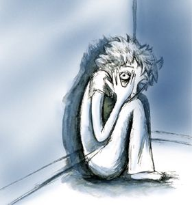
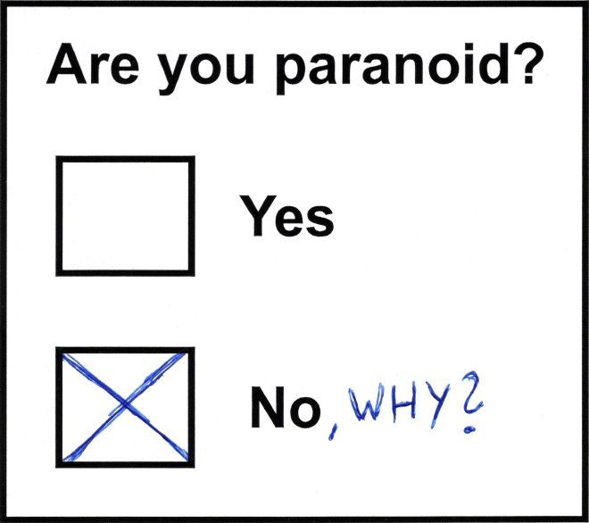
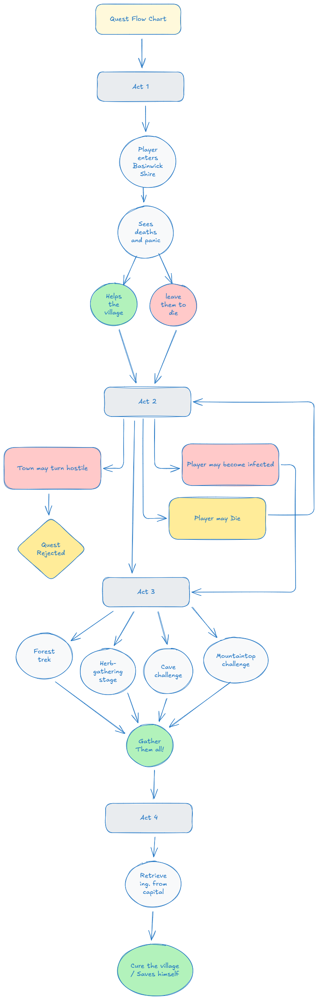
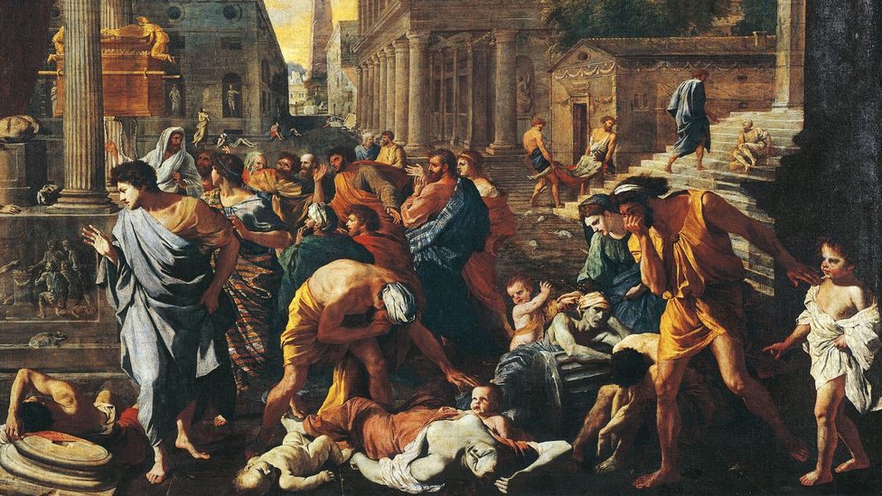
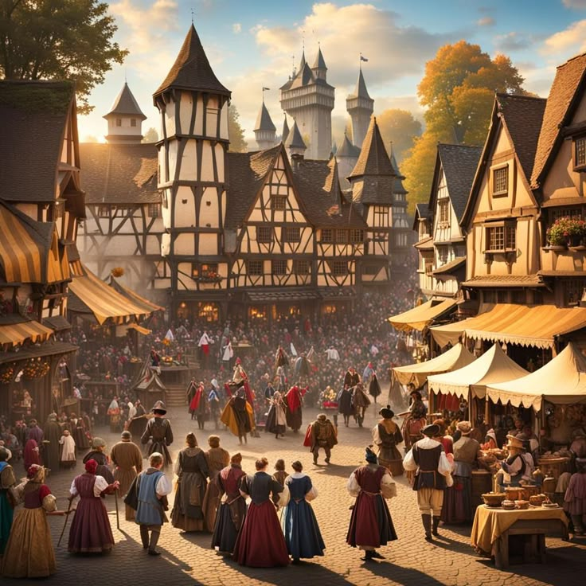
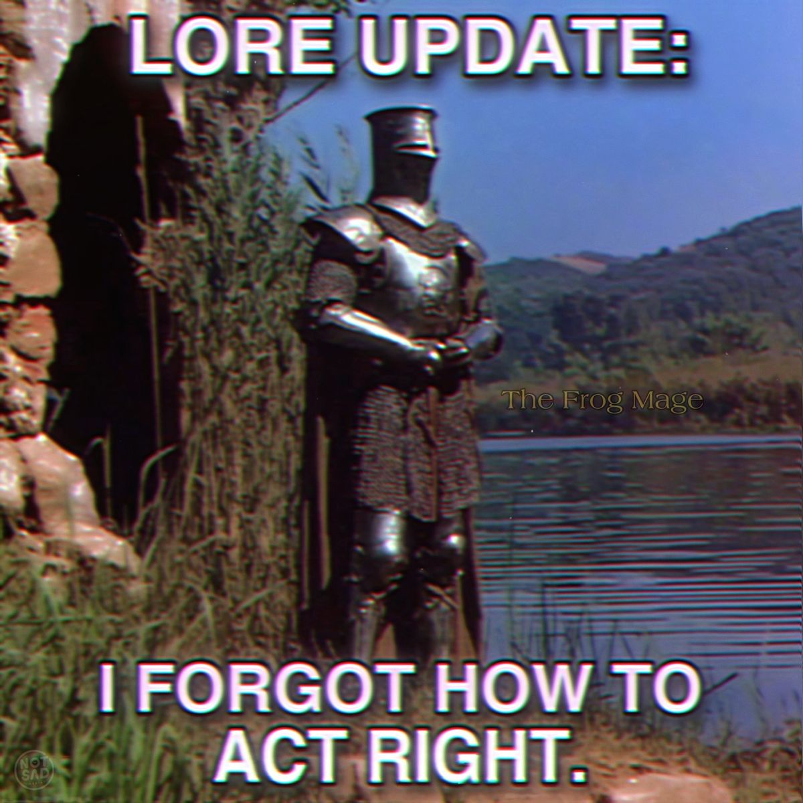
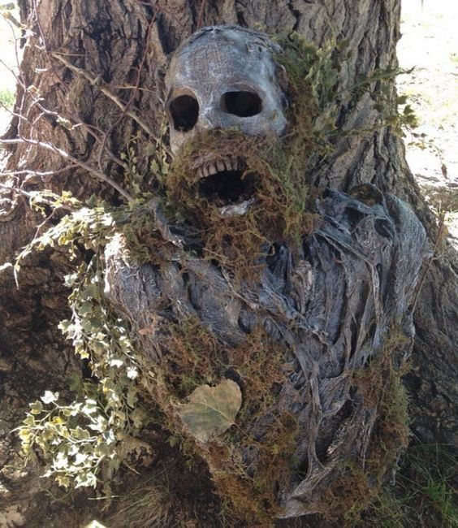

Narrative Design • Quest Design • Branching Dialogue • RPG Systems
Basinwick Shire Cure of the Dying Village
Become the reluctant savior of a dying village or the catalyst of its downfall.
- Tools Excalidraw, Figma
- Genre Fantasy RPG
- Scope Mid-level quest
- Systems Inventory, HP, Hostility
▼ keep scrolling · the plague follows you ▼
Design Pillars
- 1Consequences That EchoEvery choice returns later in emotional or mechanical form.
- 2Fear Through UncertaintyInfection, distrust, and ambiguity build tension.
- 3Moral PressurePush the player into uncomfortable decisions without forcing a “good path.”
Target Emotions
Urgency
Villagers are dying as time passes.

Dread
Environmental cues and unpredictable NPC reactions.
Responsibility
The cure depends entirely on player action.

Paranoia
Hostility shifts based on past choices.
Characters
- CVillage ChiefDesperate authority
- EVillage ElderCynical, pragmatic
- AAlchemistKnowledge-focused, anxious
- PProfessorComic relief, lab scenes
Systemic Hooks
- ☣InfectionInfection debuff modifies screen effects + animations.
- ⚔HostilityVillage hostility changes based on player dialogue history.
- ⚗InventoryInventory puzzle linked to herbs, feathers, and cure materials.
- ⛰EscapeEscape sequence uses area hazards and collapsing cave triggers.
Flowchart

Click to enlargeWhy This Quest Works in a Horror Context
- Uses moral dilemmas instead of cheap jump scares.
- Hostile villagers become unpredictable human threats.
- Resource tension through infection + cure crafting.
- Environmental hazards reinforcing vulnerability.
- Emotional stakes increase dread organically.

Play the Quest State
A tiny, playable model of the quest state machine described below: infection, hostility, herbs, feathers and cure progress. Try for the best ending, or just see how the village remembers you. (A simplified demo, not the full quest.)
Quest Design Document
Endings Overview
- Village SavedCure succeeds; villagers remember your choices.
- Bittersweet SurvivalIncomplete cure; several villagers die.
- Village CollapseCure abandoned or misused; total failure.
- Player DeathInfection overtakes the player.

Implementation Notes
- Quest state machine handles infection, hostility, and cure progression.
- Branching dialogue uses Boolean flags for major player decisions.
- Combat triggers only after hostility threshold is reached.
- Environmental hazards controlled through collision volumes.
- Blueprint scripting recommended for real-time village state updates.

Design Takeaways
- Branching must remain tightly scoped to avoid narrative overload.
- NPC morality works best when directly reflecting player choice.
- Infection mechanics enhance tension when tied to pacing.
- Refusal paths must remain engaging to preserve agency.
- Clear documentation ensures smooth team integration.

The quest board has more
Warm guild hall, worse quest. Read the horror questline next, or head back to the board.